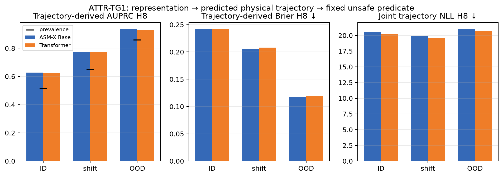
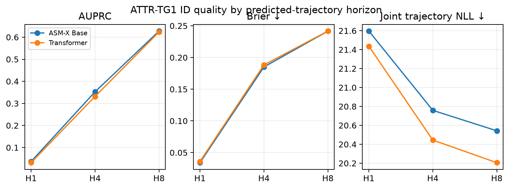
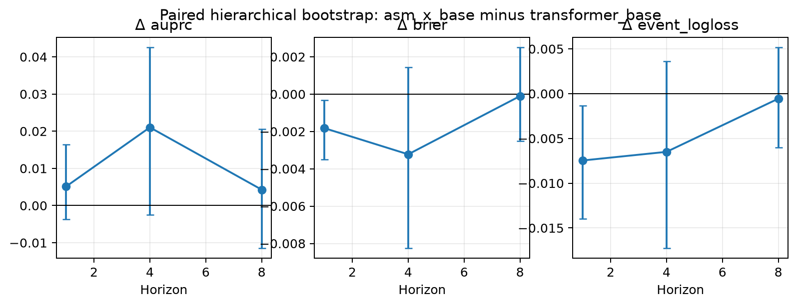

Risk is derived only from sampled physical trajectories and a fixed unsafe predicate. No HazardHead score is used.
| Split | Arm | AUPRC H8 | Brier H8 | Joint trajectory NLL H8 | Prevalence H8 |
|---|---|---|---|---|---|
| test_id | asm_x_base | 0.627888 | 0.241615 | 20.542728 | 0.515349 |
| test_id | transformer_base | 0.623614 | 0.241719 | 20.205844 | 0.515349 |
| test_shift | asm_x_base | 0.774237 | 0.206053 | 19.905859 | 0.648318 |
| test_shift | transformer_base | 0.773248 | 0.207934 | 19.608870 | 0.648318 |
| test_ood | asm_x_base | 0.935354 | 0.117284 | 20.993092 | 0.858577 |
| test_ood | transformer_base | 0.930111 | 0.119701 | 20.739208 | 0.858577 |



Interpretação completa · Summary JSON · Reporting compatibility manifest